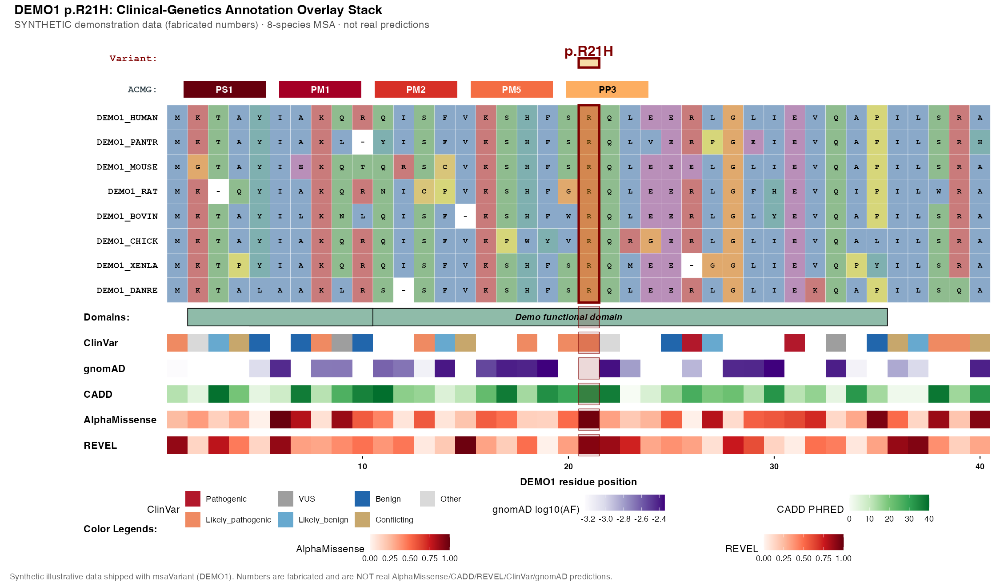

msaVariant produces publication-quality figures for a single genetic variant: a cross-species protein multiple sequence alignment with per-column conservation, stacked annotation tracks (ClinVar, gnomAD, AlphaMissense, REVEL, CADD, protein domains), and an automatic ACMG evidence-code strip (PS1, PM1, PM2, PM5, PP3) computed straight from the data. It is built on top of ggmsa and returns a normal ggplot/patchwork object, so every layer, colour, and label stays fully customisable for figures you can drop into a paper.
🔨 Installation
Install the visual base ggmsa (Bioconductor), then msaVariant from GitHub:
# ggmsa (required base) + Bioconductor deps
if (!requireNamespace("BiocManager", quietly = TRUE))
install.packages("BiocManager")
BiocManager::install("ggmsa")
# msaVariant (development version)
# install.packages("devtools")
devtools::install_github("ramizkrdnz/msaVariant")💡 Quick Example
One call assembles the whole figure. This example runs out of the box — it uses the small synthetic DEMO1 bundle that ships with the package (via import_local_bundle()), so no Zenodo download and no external data are needed:
library(msaVariant)
# 1. Load the bundled synthetic DEMO1 example into the cache (no Zenodo)
import_local_bundle(
system.file("extdata", "DEMO1.rds", package = "msaVariant"),
gene = "DEMO1"
)
# 2. Build the full overlay figure for the demo variant DEMO1 p.R21H
plot_variant_overlay(
gene = "DEMO1",
aligned_fasta = system.file("extdata", "demo_aligned.fasta",
package = "msaVariant"),
variant_pos = 21,
variant_label = "p.R21H"
)
⚠️
DEMO1is synthetic. Every number in this figure is fabricated illustrative data — not real AlphaMissense / CADD / REVEL / ClinVar / gnomAD predictions. It exists only to let the example run out-of-the-box and to show the figure layout.DEMO1is not a real gene.
The synthetic variant DEMO1 p.R21H is engineered so that all five ACMG codes fire — PS1, PM1, PM2, PM5, PP3 — computed automatically from the bundled tables, exactly as they would be for real data.
📚 Learn more
Full articles are on the documentation site, https://ramizkrdnz.github.io/msaVariant/:
- Get Started — install, load data, and build your first overlay.
- Full workflow tutorial — end-to-end, from FASTA to finished figure.
-
ACMG Evidence Codes — how PS1/PM1/PM2/PM5/PP3 are computed, and tuning
pp3_min_predictors. - Annotation Tracks — the ClinVar / gnomAD / AlphaMissense / REVEL / CADD and domain tracks, and how each is aggregated per residue.
-
Colour Schemes —
journal,colorblind(Okabe–Ito),grayscale, and per-element overrides. - Toggling Layers — show/hide any track; the layout re-flows with no gaps.
-
Bring Your Own Data — overlay your own annotations with
geom_track(), or import your own bundle.
🧬 Bring-your-own-data mode
No Zenodo bundle required — overlay any per-residue values you already have:
my_data <- data.frame(pos = 510:530, score = runif(21))
ggmsa::ggmsa(fa) +
geom_track(my_data, msa = fa, value = "score", name = "Custom track")⚠️ Data upload pending
The Zenodo data deposit is not yet published, so remote fetches (fetch_gene_data() and the gene-symbol annotation layers) will currently fail. Until the deposit is live, use your own data via Bring-your-own-data mode above, or load a local bundle with import_local_bundle() (as in the Quick Example). This note will be removed once the deposit is uploaded and wired in.
📄 License
msaVariant is released under the Artistic-2.0 license.
Note that data fetched via geom_alphamissense() is licensed CC-BY-NC-SA 4.0, which restricts commercial use of works derived from it. Check the license of every annotation source you display before reusing a figure.